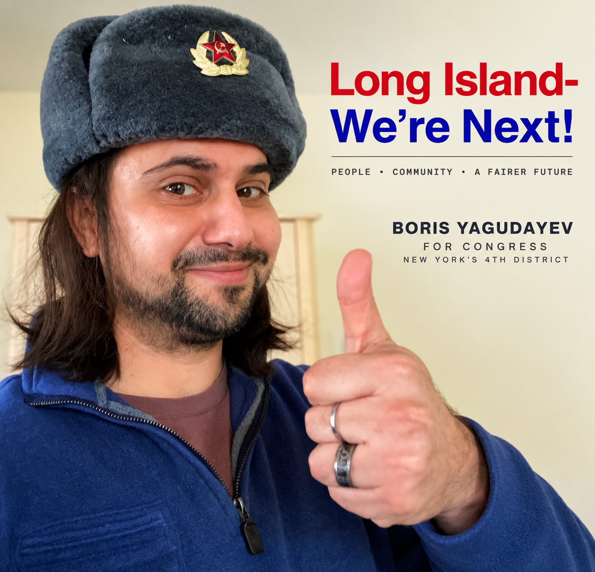

Biography
From Tashkent and Queens to Oceanside, Boston University, Long Island politics and his later professional and civic life.
LONG ISLAND · NEW YORK
A working Long Islander documenting an unconventional attempt at congressional politics: pursuing public exposure through communication, social media and civic participation rather than traditional campaign fundraising.

FEATURED 10-YEAR MODEL · 2030–2040
What would this plan mean for everyday people? The goal is not simply a larger economy on paper. It is to turn higher productivity into higher real incomes and more room in household budgets after taxes and major expenses.
The 2030–2040 model combines rising productivity and real market incomes with a modest universal cash benefit, universal healthcare, expanded housing supply, child care and education, stronger retirement security and investment in productive capacity. The household analysis asks a practical question: after wages, benefits, taxes and ordinary expenses are counted together, how much financial room is left?
Under the model's central high-AI-productivity assumptions, resources remaining after modeled taxes and a comparable spending basket increase across the income distribution, although the gains and tax burdens differ substantially by household. For a middle-income household, the illustrative mature scenario leaves roughly $32,900 a year—about $2,740 a month—for additional spending, saving, investing or debt repayment after modeled taxes and the cost of a comparable household spending basket.
These figures are scenario estimates, not guarantees or an official government score. They depend on the plan's productivity, housing, cost and tax assumptions.
Approximate category shares for the middle income quintile, based on BLS 2024 Consumer Expenditure data.
Illustrative plan scenario, not a guarantee. “Financial room” means resources remaining after modeled taxes and the comparable spending basket.
THE IDEA
Yagudayev says his congressional effort grew out of a concern about the role money and access play in American politics. His stated goal is to test whether a working person can maintain a job while pursuing federal office without building a conventional fundraising operation.
His approach relies primarily on social and web-based media, personal communication, and participation in rallies, protests and other public events. He describes the campaign itself as an experiment in political access alongside the policy ideas he has developed about campaign and democratic reform.
Rather than soliciting campaign contributions through this website, he directs people interested in following the effort to his public social-media channels.
WHY THIS SITE EXISTS
This website brings together Yagudayev's personal and professional background, political history, stated policy positions, public activity and source material so that interested readers can examine the record directly.
From Tashkent and Queens to Oceanside, Boston University, Long Island politics and his later professional and civic life.
A record of political and policy positions Yagudayev has stated publicly.
The standalone ten-year economic model combining the major domestic policy proposals and illustrative fiscal assumptions.
A chronological record of civic participation, political activity and public material.
References and editorial notes distinguishing documented facts, first-person accounts and other source material.
FOLLOW THE PUBLIC ACTIVITY
Yagudayev uses social media as the primary public channel for his congressional effort and political commentary.
CAMPAIGN-FINANCE CONTEXT
Yagudayev is pursuing a write-in approach while avoiding traditional campaign fundraising. Federal Election Commission guidance states that an individual running for the U.S. House generally becomes a federal candidate for registration and reporting purposes after campaign contributions received or expenditures made exceed $5,000. New York separately regulates campaign-finance activity and provides an exemption from state registration and financial-disclosure reporting for candidates who will not receive or spend more than $50 on their campaign, including personal funds.
Election and campaign-finance requirements can depend on specific activity and circumstances. This summary is informational; see the Sources page and official election authorities for current requirements.